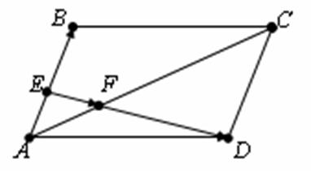

П 5.3 № 22.
На стороне  и диагонали
и диагонали  параллелограмма взяты
параллелограмма взяты
и диагонали параллелограмма взяты соответственно точки и
так, что
и .
Докажите, что точки , и  лежат
на одной прямой
лежат
на одной прямой
лежат
на одной прямойи определить отношение отрезков  и.
и.
и.Доказательство:

Пусть , .
Тогда .
 .
..
Отсюда , ,
то есть точки , , лежат
на одной прямой.
лежат
на одной прямой.